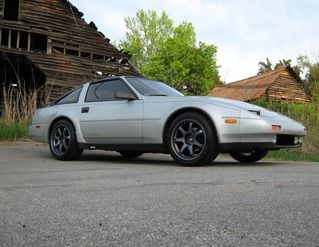

-
Okay, sounds like its very likely it is the throttle shaft seal. A 240sx throttle body WILL direct fit onto a normal plenum right? (I am planning on a gutted plenum eventually, but for now its stock.)Robyr wrote: I had a flat out open vacuum port and I still made 10psi. You're turbo will continue to pressurize the manifold, and reach the target pressure. You are overspooling the turbo though. -
[quote]maverickxeo wrote:Believe it is a direct bolt on upgrade and like you said there is no advantage of the 60mm until you gut the plenumOriginally posted by RobyrUsual Z31 suspect: Garage Queen (aka broken)

-
Correct, the 240sx Tb is direct bolt on."When you approach the world with the apron of a servant, you're allowed to go places you can't if you approach it with the crown of a king."~Jon Foreman
86 NA2T. Remanufactured NA engine. T3, intercooled, 13 lb boost. 3" turbo back CM exhaust w/cat, DXD Stage II clutch, blow-through w/ BOV, E-fans, short shifter. -
Now the next question… how hard is the throttle body to replace? It certainly is a tight fit in there… and Id prefer to not pull of the intake piping. -
Thats happening. No way around that jazz. It is also preferable to pull the plenum.maverickxeo wrote: Now the next question… how hard is the throttle body to replace? It certainly is a tight fit in there… and Id prefer to not pull of the intake piping. -
[quote]Robyr wrote:Ouch. :-(Originally posted by maverickxeo
If I have to pull the plenum, no sense in NOT gutting it though :-)
Just curious, if this is the issue; is it something that I should fix ASAP or can it wait a bit? -
I let mine ride forever. It's not a huge leak. Pulling the plenum isn't that big a deal. And gutting it isn't exactly something you do with a dremel and a few hours of free time, you'll need to cut it open, and have access to a TIG. -
Oh yeah, thats why I wanted to wait haha.
Also, I went out and let it run; checking for the leak. I listened around the throttle body area.... not the throttle body.
Its coming AFTER the throttle body; but I dont know where. Ill see if I can search a bit more, but its NOT coming from brake booster or throttle body; and all vac lines are on and have no cracks or damage. -
I'm sorry there is no way in hell you can determine where the leak is by listening. You might be lucky, but that is NOT a good way on determining where leaks are. The starter fluid spray method or vacuum leak testers are the only way you can actually conclude where its coming from. I hear the leak from like 3 different spots in my car and I know it's only coming from 1 source. Just lately I bought a rear main oil seal thinking it was installed wrong and turns out after we put UV die in the oil the leak was coming from the valve cover gasket.Usual Z31 suspect: Garage Queen (aka broken)
-
I did try spraying carb cleaner and using soapy water too. No luck though.
Also, I have another issue.
What would cause the car (auto turbo) to 'shake' or 'surge' a bit at 3400 to 4000 after it downshifts to first at WOT. It WONT do it at any other gear; and it wont do it at any other RPM range or throttle position. 90% throttle doesnt do it, even though it still reaches peak boost and goes through those RPMs after it downshifts.
It seems I fix one thing on this car and another two things pop up haha -
Did you ever get results from that vaccum leak test? Im having the same issues.. -
^ Stay tuned further. They were finished up a car yesterday before mine so it might not be till next week :-(
As long as they find it I will wait lolUsual Z31 suspect: Garage Queen (aka broken)
-
ive posted how i do my boost leak tests more than once, and i find it to be the easiest way to do it.
search for it and you'll find the way to do it easily. -
So the shop did a test on it and found NOTHING! (out of the ordinary for vac leaks). I'm pretty disappointed considering you can hear it when you open up the throttle a bit. My question is I see people talking about a leak off the silicone hose from the turbo to charge pipe could cause no boost, low boost or only being able to boost a certain amount and was wondering if this could be a cause of my rich conditions. Seeing as though this might not show up on vac leak testers it makes the most sense. My boost does get up to 6.7 ~ 6.8, and sometimes hit 7.0 - 7.2 psi just after the engine was finished (was colder then too). I'm guessing since the pipe and hose was shot a bit it has just kept loosening up and getting worse the more I drive it. I'm going to finally invest in my intercooler pipes and new silicone hoses with t bolt clamps and see if that fixes my problem. Otherwise my car is retarded. End of story :nanan?reUsual Z31 suspect: Garage Queen (aka broken)
-
question.
did they rotate the throttle while doing the boost leak test?
i'm going to do the test this weekend and see if it's the throttle seal. i am starting to think it is.

Copyright © 2006–. All rights reserved. Privacy Policy